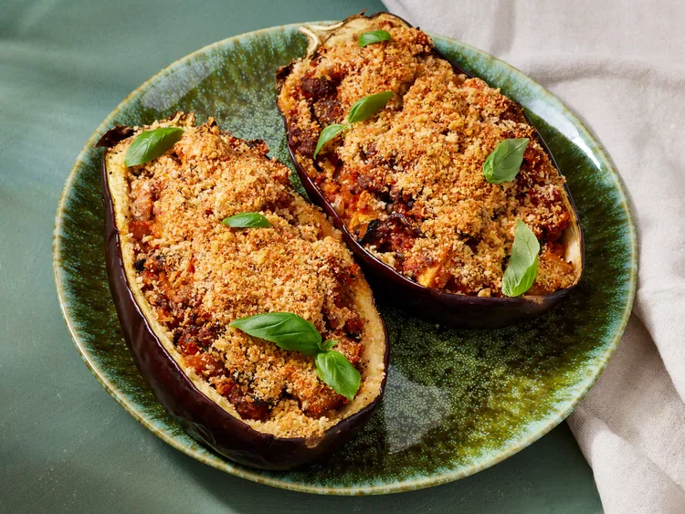

Stuffed Eggplant

Description
This stuffed eggplant recipe is healthy, filling, and will please even the pickiest eaters.
These are the ingredients you’ll need to make this restaurant-worthy stuffed eggplant recipe at home:
Ingredients
- Eggplant: You’ll need one eggplant (halved lengthwise) to make two servings.
- Eggplant: You’ll need one eggplant (halved lengthwise) to make two servings.
- Seasonings: This stuffed eggplant is seasoned with salt, pepper, fresh garlic, and fresh basil.
- Sausage: Sweet Italian sausage makes this stuffed eggplant a hearty, crowd-pleasing meal.
- Vegetables: An onion and fresh mushrooms lend texture and flavor.
- Pasta sauce: Use store-bought or homemade tomato-basil pasta sauce.
- Bread crumbs: Italian-seasoned panko bread crumbs give the stuffed eggplant a welcome crunch.
- Cheese: For the most delicious results, grate your own Parmesan cheese instead of using the pre-shredded stuff.
Stuffed Eggplant